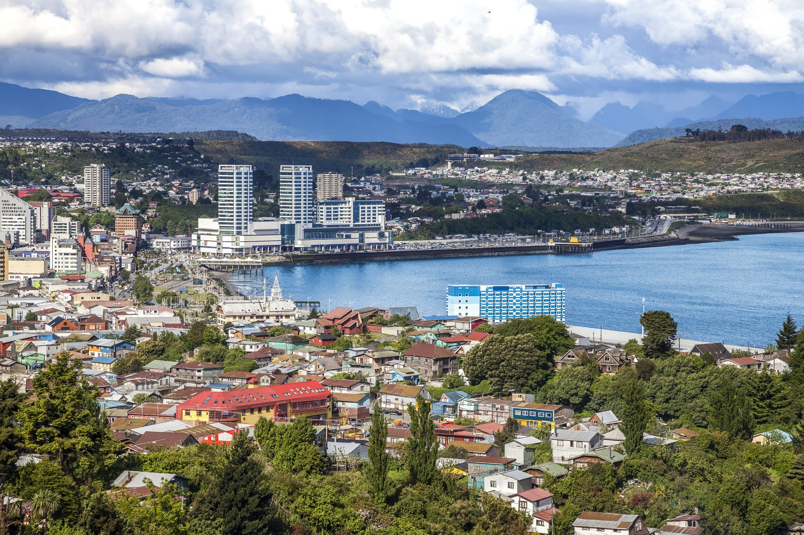
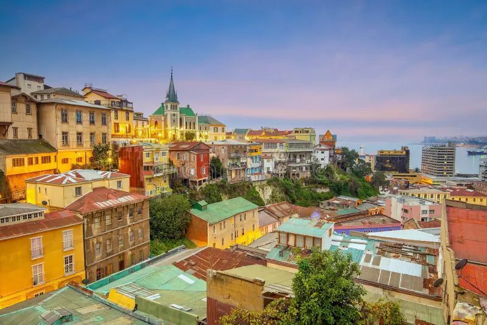

Dato Curioso
10 de Septiembre, 2026 | 4 min de lectura
¿Sabías cuál es la ruta de bus más larga de Chile?
Recorre más de 3.000 kilómetros conectando el desierto de Arica con los paisajes del sur chileno. Te contamos los detalles de esta gran travesía sobre ruedas.

Consejos de Viaje
12 de Septiembre, 2026 | 3 min de lectura
5 Consejos esenciales para tu equipaje en viajes nocturnos
Aprende qué cosas debes llevar siempre en tu bolso de mano y cómo organizar tus pertenencias para viajar cómodo y seguro en trayectos largos.